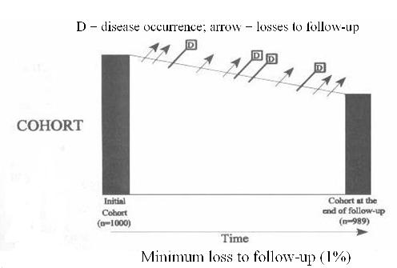
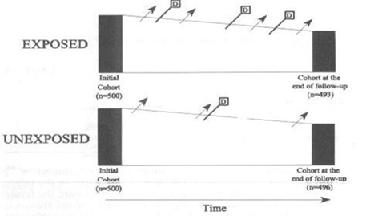

Cohort Study
Lead Author(s): Mark Pletcher, MD; Jeff Martin, MD
Definition of a Cohort Study
In a cohort study, the study base is an explicitly defined group of individuals based on some set of characteristics at a given time, called time zero.
- This group of individuals is then followed forward in time.
We will look at cross-sectional and case-control studies in the setting of a cohort because a cohort study explicitly defines its study base as the individuals who are recruited into the cohort.
- The members of the cohort are the population whose disease experience will be observed during the study follow-up period.
- Looking at cross-sectional and case-control studies in the setting of a cohort makes clear how they sample (or do not sample!) the cohort study base.
Even outside a well defined population like an HMO, there is always a hypothetical cohort among whom the cases would have been diagnosed if they had been enrolled in a cohort study. For example, if some group of persons with the disease diagnosis during a five-year period had been enrolled in a cohort at the beginning of the five-year period along with a sample of their neighbors who were not diagnosed with the disease, they would constitute a cohort. In practice, it may be difficult to identify this kind of less well defined hypothetical cohort.
Individuals in a Cohort Study
A Cohort Study is defined by observation of a group of individuals over a period of time for occurrence of one or more study outcomes.
Individuals are identified for inclusion in the cohort a priori (without reference to whether an event occurred during follow-up), measurements are taken, and then outcomes during follow-up are analyzed.
Difference Between Case Control and Cross-Sectional Study
For contrast: In a Case Control Study, individuals selected for the study based on whether they did (cases) or did not (controls) have an event or condition of interest. In a Cross-Sectional Study, individuals are identified for inclusion in the study without reference to outcomes or conditions and measurements are taken at one point in time (no observation time occurs).
Clinical Trial
A clinical trial is a special case of a cohort study. A trial is a cohort study conducted as an experiment in which the exposure is randomly assigned rather than just observed.
Cohort as the Basis of Design
All study design is best thought of as ways of sampling the disease experience of a cohort.
COHORT STUDY DESIGN
The sine qua non for causation is that the cause precede the event, and the cohort study is the gold standard because it provides this temporal sequence.
- Randomized trial is a cohort design with exposure assigned rather than observed.
- Case-control design, in particular, is best understood by considering how the experience of a cohort is sampled.
- Cohort design and cross-sectional design are relatively easy to understand, but there is a lot of misunderstanding about Case-control design, even in epidemiological text books.
Measuring Incidence in a Cohort Study
Problem: How would you measure breast cancer incidence in a cohort study (such as the Nurses Health Study)?
- Incidence = occurrence of new cases
- But how do you account for the role of time?
Cohort studies typically start with a study base of individuals free of the disease being studied and then attempt to identify every new diagnosis of the disease during the follow-up time of the cohort.
- Therefore, the fundamental outcome measure in a cohort study is disease incidence, the occurrence of new cases over time. But over time is a key phrase. Just counting the cases is not enough to measure incidence. The amount of time during which the diagnoses were made has be included in the way incidence is defined.
Schematic of Cohort Study Design
As pictured in the diagram below, a cohort study begins with a group of individuals identified at time zero, none of whom have the disease outcome of interest, who are then observed over time for diagnosis of the disease. 
Some persons develop the outcome of interest, here depicted as D for disease.
- Others become lost to follow-up,
- while others stay in the cohort but have not yet developed the outcome of interest by the last date of study observation.
- In some studies the outcome might be death, but that is not the intention here.
Unless death is the outcome, deaths are one of the ways subjects become lost to follow-up.
In other words, in this graphic subjects who died would be among those leaving the cohort, represented by the arrows.
- Others could be those who decline further follow-up,
- those who cannot be located for return visit/evaluation by the investigators
- those who experience a disease outcome other than the one under investigation which makes them ineligible for further follow-up.
There is the further assumption in this diagram that the disease diagnosis is a one-time event. Although this is frequently the case in cohort studies either because the event can only occur once (eg, death) or because the focus is on time to the first event (eg, time to first myocardial infarction), repeating events can also be studied (eg, frequency of debilitating back pain). In the case of repeating events a diagnosis does not remove an individual from follow-up as depicted in the above diagram.
The Framingham Study is an excellent example of a cohort study.
Main Threat to Validity in a Cohort Study - Lost to Follow-up
Subjects lost during follow-up are thought of as the main threat to validity in a cohort study.
- Prospective cohort thought of as best study design but poor follow-up can change that
- Equally true of clinical trials and observational cohorts
- Number of losses is less important than how losses are related to outcome and risk factor
Measures of Association in a Cohort Study
A cohort study allows us to calculate the incidence of disease in two groups.
One way to conceptualize measuring incidence in a cohort in two groups defined by a dichotomous exposure variable:
Think of it as following two different cohorts (diagram below)
- An enrollment criterion of exposure, for one cohort
- An enrollment criterion of no-exposure, for the other cohort.
Thinking of it this way requires that exposure is defined at baseline and that it is not changing over time.

In each sub-cohort compare either:
Summary of Measure of Association in a Cohort Study
This schematic shows all the possible ratio and difference measures that can be calculated from and from cohort data.
A cohort study allows us to calculate the incidence of disease in two groups.
Weakness in Measuring Predictors in Retrospective Cohort Studies
Cohorts can be retrospective. Looking back in time, a group of individuals is identified as a cohort (a typical example is a group of workers, such as shipyard workers in WWII) and then their disease experience over a period of time is investigated. In terms of study validity, though, the key question is not when is the study being carried out, but when were the measurements made and how good are they?
Retrospective cohort studies always depend on measurements made in the past. This is a limitation, but it can be overcome if the necessary data exists or, if the measurement is of a biological specimen, if biological samples have been stored and can be accessed.